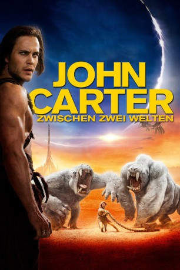

#2138 John Carter: Zwischen zwei Welten
Alternativ: John Carter
 
 IMDB-Wertung: 6.6 / 10
IMDB-Wertung: 6.6 / 10  Metascore: 51
Metascore: 51 
Der Bürgerkriegs-Veteran John Carter findet sich eines Tages plötzlich und aus unerklärlichen Gründen auf einem fremden Planeten wieder. Er stellt fest, dass dieser Planet, den die Einheimischen Barsoom nennen, der Mars ist. Barsoom beherbergt die unwahrscheinlichsten, fremdartigsten Kulturen und Lebewesen, droht aber durch eben diese unterzugehen. Denn zwischen den Kulturen und Völkern herrscht ein erbitterter Krieg. Auf seinen Reisen durch diese Welt begegnet Carter vielen verschiedenen Gestalten, wie auch dem charismatischen Anführer Tars Tarkas und der wunderschönen, selbstbewussten Prinzessin Dejah Thoris. Carter weiß, dass das Überleben dieser Welt und ihrer Bewohner auch von ihm abhängen...
Jahr: 2012
Dauer: 132 Minuten
FSK: 12
Land: USA Studio: Walt Disney Studios Motion PicturesTonspuren: DTS - ,
Untertitel: Deutsch,
Auflösung: 1080p (1920x800) Größe: 14233 MB
Genre: Action, Abenteuer, Fantasy, Sci-Fi
Regisseur:  Andrew Stanton
Andrew Stanton
Drehbuch: Andrew Stanton, Mark Andrews, Michael Chabon, Edgar Rice Burroughs
Soundtrack: Michael Giacchino
Darsteller:
 Taylor Kitsch als John Carter
Taylor Kitsch als John Carter Lynn Collins als Dejah Thoris
Lynn Collins als Dejah Thoris Samantha Morton als Sola
Samantha Morton als Sola Willem Dafoe als Tars Tarkas
Willem Dafoe als Tars Tarkas Thomas Haden Church als Tal Hajus
Thomas Haden Church als Tal Hajus Mark Strong als Matai Shang
Mark Strong als Matai Shang Ciarán Hinds als Tardos Mors
Ciarán Hinds als Tardos Mors Dominic West als Sab Than
Dominic West als Sab Than James Purefoy als Kantos Kan
James Purefoy als Kantos Kan Bryan Cranston als Powell
Bryan Cranston als Powell Polly Walker als Sarkoja
Polly Walker als Sarkoja Daryl Sabara als Edgar Rice Burroughs
Daryl Sabara als Edgar Rice Burroughs- Arkie Reece als Stayman #1 / Helm
- Pippa Nixon als Lightmaster
 James Embree als Thern #2
James Embree als Thern #2 Nicholas Woodeson als Dalton
Nicholas Woodeson als Dalton- Kyle Agnew als Stable Boy
 Don Stark als Dix the Storekeeper
Don Stark als Dix the Storekeeper- Josh Daugherty als Rowdy #1
- Jared Cyr als Rowdy #2
- Sean Carrigan als Cavalryman
- Dusty Sorg als Twitchy Corporal
- Christopher Goodman als Stockade Guard
- Amanda Clayton als Sarah Carter
- Phil Cheadle als Thern in Cave
 David Schwimmer als Young Thark Warrior
David Schwimmer als Young Thark Warrior- Jhil McEntyre als Council Member #5
- Daniel O'Meara als Vas Kor
 Philip Arditti als Spotter #2
Philip Arditti als Spotter #2 Jon Favreau als Thark Bookie
Jon Favreau als Thark Bookie Art Malik als Zodangan General
Art Malik als Zodangan General- Holly Weston als Carter's Wife, Corpse
- Gary Milner als Zodangan Guard
- Cate Fowler als Matron of Chamber, Matai
 Darwin Shaw als Zodangan Officer, Matai
Darwin Shaw als Zodangan Officer, Matai Steven Cree als Humble Guard
Steven Cree als Humble Guard- Jeremy Booth als Doctor
- Jill Baker als Additional Voice
- Christian Black als Zodangan Soldier , uncredited
- Ekaterina Botziou als Dejah's Handmaiden , uncredited
 Bern Collaco als Zodangan Civilian / Zodangan Fruit Stall Holder , uncredited
Bern Collaco als Zodangan Civilian / Zodangan Fruit Stall Holder , uncredited- Matt Lasky als Young Thark Warrior , uncredited
- Morgan Lester als Helium Guard , uncredited
- Thomas J. Post als Helium Soldier , uncredited
- Davood Ghadami als Stayman #3
- Philip Philmar als Thern #1
- Figs Jackman als Man in the Bowler
- Emily Tierney als Pretty Woman in NYC Doorway
- Edmund Kente als Telegraph Clerk
- Rupert Frazer als Thompson
Datei: X:\2012(G-M)\John Carter Zwischen zwei Welten (2012, FSK12, 1920x800).mkv seit 08.10.2015
Festplatte: HD 2012(A-M)
 Es gibt insgesamt 112 Filme in der Gruppe '2012(G-M)'
Es gibt insgesamt 112 Filme in der Gruppe '2012(G-M)'